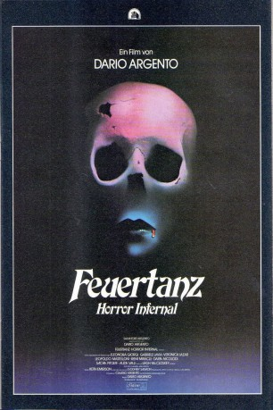
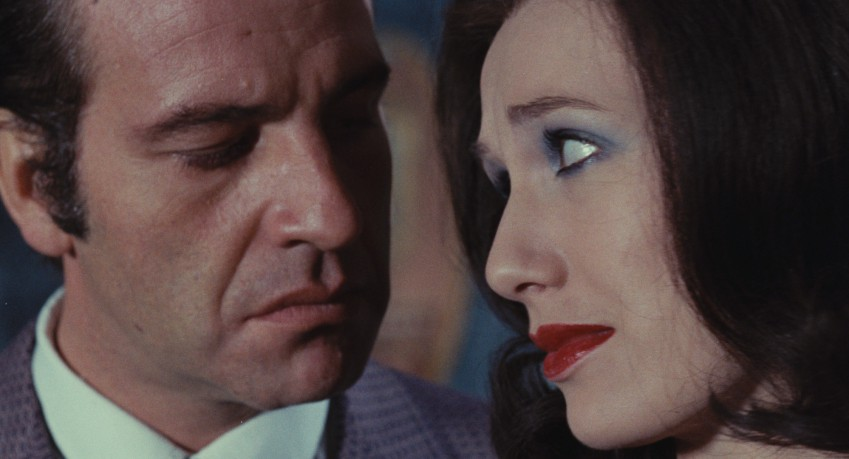
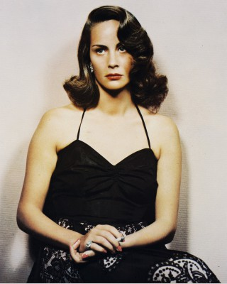
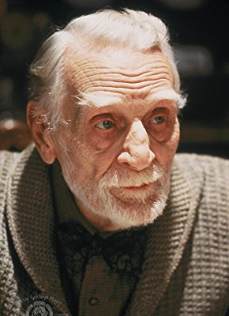
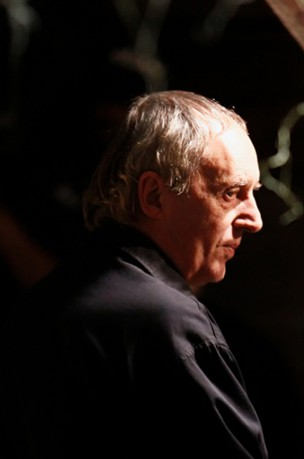
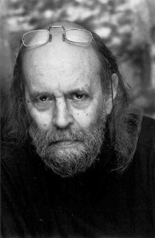
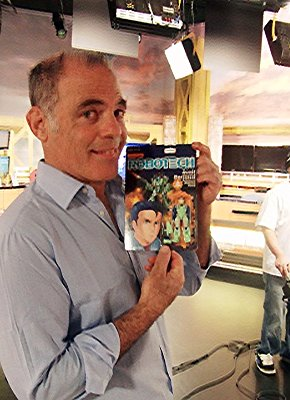

#8325 Horror Infernal
Alternativ: Inferno
 
 IMDB-Wertung: 6.7 / 10
IMDB-Wertung: 6.7 / 10  Metascore: 0
Metascore: 0 
Nach der Lektüre eines Buches über Alchemie stellt Rose erschrocken fest, dass ihr Wohnhaus eine der drei Brutstätten der Hölle beherbergt. Zutiefst beunruhigt schreibt sie sofort an ihren Bruder Mark. Anschließend macht sie sich auf die Suche nach Indizien, die die Thesen des Buches untermauern. Doch noch bevor Mark den Brief lesen kann, müssen deswegen zwei Menschen sterben. Als er dann in New York eintrifft, ist auch seine Schwester nicht mehr am Leben. Da Rose zu diesem Zeitpunkt aber lediglich vermisst wird, ahnt Mark nicht, welche Schrecken ihm noch bevorstehen...
Jahr: 1980
Dauer: 106 Minuten
FSK: BPjM Restricted
Land: Italien Studio: 20th Century FoxTonspuren:
Untertitel: Deutsch,
Auflösung: 1080p (1920x1032) Größe: 10076 MB
Genre: Horror
Regisseur:  Dario Argento
Dario Argento
Drehbuch: Dario Argento
Soundtrack: Keith Emerson
Darsteller:
- Leigh McCloskey als Mark Elliot
- Irene Miracle als Rose Elliot
- Eleonora Giorgi als Sara
-  Daria Nicolodi als Elise De Longvalle Adler
- Sacha Pitoëff als Kazanian
-  Alida Valli als Carol, the caretaker
- Veronica Lazar als The Nurse
- Gabriele Lavia als Carlo
-  Feodor Chaliapin Jr. als Professor Arnold / Dr. Varelli
- Ania Pieroni als Musical Student
- Ryan Hilliard als Shadow
- Paolo Paoloni als Music Teacher
-  Dario Argento als Narrator (uncredited)
-  Ted Rusoff als John (uncredited)
-  Gregory Snegoff als Carlo (uncredited)
- Leopoldo Mastelloni als John, the Butler
- James Fleetwood als Cook
- Rosario Rigutini als Man
 Fulvio Mingozzi als Cabdriver
Fulvio Mingozzi als Cabdriver- Luigi Lodoli als Bookbinder
- Rodolfo Lodi als Old Man
- Carolyn De Fonseca als Carol (uncredited)
- Anthony La Penna als Varelli (uncredited)
- Gianni Macchia als John (uncredited)
- Edward Mannix als Kazanian (uncredited)
Datei: X:\FSK18-Collections\Dario Argento\Horror Infernal (1980, FSKBPjM Restricted, 1920x1032).mkv seit 24.02.2018
Festplatte: FSK18
 Es gibt insgesamt 10 Filme in der Gruppe 'FSK18-Collections\Dario Argento'
Es gibt insgesamt 10 Filme in der Gruppe 'FSK18-Collections\Dario Argento'